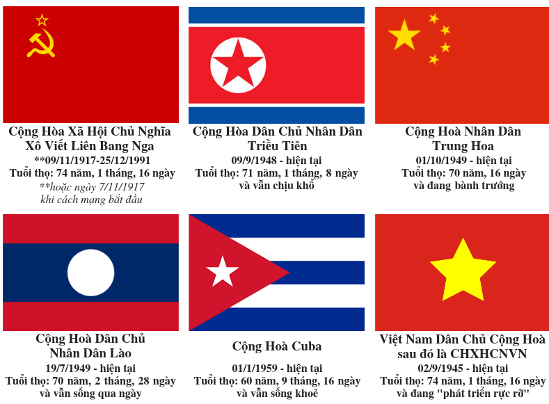
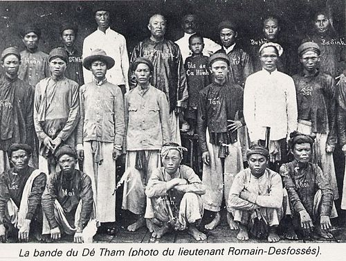

B. Tiến lên CNXH là một tất yếu khách quan.
- Học thuyết về hình thái KT – XH của C. Mác khẳng định sự phát triển của xã hội loài người là quá trình lịch sử - tự nhiên.
- Vận dụng học thuyết của C. Mác để nghiên cứu về tiến trình lịch sử, HCM cho rằng: “Cách sản xuất và sức sản xuất phát triển và biến đổi mãi, do đó mà tư tưởng của người, chế độ xã hội… cũng phát triển và biến đổi”.
Tuy nhiên, từ năm 1953, HCM đã nhận thấy: Tùy hoàn cảnh, mà các dân tộc phát triển theo con đường khác nhau.

- Liên xô đi thẳng đến CNXH, có nước thì phải đi qua chế độ dân chủ mới, rồi tiến lên CNXH như các nước Đông Âu, Trung Quốc, VN.
- Người giải thích: “Chế độ dân chủ mới là … chủ nghĩa Mác – Lenin”.

Tư tưởng trên phải đặt vào bối cảnh đương thời.
- Như vậy, theo HCM, tiến lên XHCN là một quá trình tất yếu, tuân theo những quy luật khách quan trước hết là những quy luật trong sản xuất vật chất. Song, tùy theo bối cảnh cụ thể mà thời gian, phương thức tiến lên CNXH ở mỗi QGia sẽ diễn ra một cách khác nhau.
- Đối với VN chỉ có CNXH mới là nguồn gốc của tự do, bình đẳng, bắc ái, xóa bỏ những bức tường dài ngăn cản con người yêu đoàn kết, yêu thương nhau.